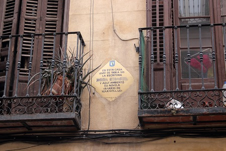

Esta es la última direccion anotada en "Persuasión", el número 41 nos ha llevado a esta casa:
Esta ha de ser la casa de nuestra escritora desaparecida.
En esta casa vivió de 1908 a 1911 y ambientó su novela "Barrio de Maravillas". En la plaza de este nombre estaba el Cuartel de Artillería y habían ocurrido la famosa defensa de Daoíz y Velarde.
